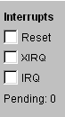

Check boxes are provided for the three external interrupt sources, RESET, XIRQ, and IRQ. When the interrupt is handled, the check is cleared. Boxes can be checked while simulations are running via "Go". The checks will be cleared as soon as the interrupt is request is serviced, even while running via "Go".
Then value given as pending are the number of interrupt sources that are requesting service.
Note that if an interrupt request is serviced and there is no handler (interrupt vector is $0), the an error is assumed and the simulation stops.